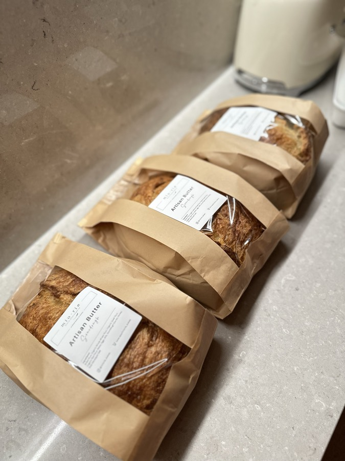

Everyday sourdough
The honest loaf.
Flour, water, salt and time.
- Shaped by slow fermentation
- Seeds, nuts, fruit & heritage grains
- Made for the daily table


Six years · countless loaves
How it began
Six years ago, I went looking for a good rustic loaf for a dinner I was hosting.
Finding none, I baked my own. My guests smelled it before they sat down.
If instant yeast smelled this good, sourdough must be heavenly.
Many failed starters and brave family taste-tests later, friends began asking for bread. Then friends of friends.
So here we are. Meet mio·rie, my little micro-boulangerie.

Around 40 hours · cold fermented
Our bread philosophy
For us, sourdough has always been about more than flavour.
Premium European flours with stone-ground spelt and rye, chosen to carry a long fermentation. Whole grains go into every loaf.
A long, cold fermentation, given the time it needs rather than rushed for production.
Steady temperatures let the wild yeast work at its own pace.
Because for us, good bread isn’t just about what goes into it. It’s also about giving it the time to become what it should be.
Buy our sourdoughInside our little kitchen





The boulangerie
The same foundation and the same patience. What changes is what we fold in.
Everyday sourdough
Flour, water, salt and time.
Artisan sourdough
Enriched doughs and bold pairings, beyond the everyday.
Made from scratch · French butter
The pastry story
For slow afternoons over your favourite brew.
Brown-butter financiers, tender madeleines and savoury scones, made from scratch with French butter, couverture chocolate, and Uji matcha and hojicha.
Thoughtfully made. To savour slowly.
Buy our small treats
12 oz tubs · for one or two
Little mio·rie indulgence
An elegant favourite at our own table.
Baileys Classic: espresso, Baileys and velvety mascarpone, under Valrhona cocoa.
Matcha-Misu: Uji matcha and silky mascarpone, gently bittersweet.
For lingering moments and quiet celebrations.
Buy our tiramisu
Small batches · a personal touch
Our principle
A small bakery can offer what larger ones find hard to: a conversation, and getting to know your preferences.
Where a small adjustment suits you without compromising the recipe, we’re happy to consider it.
Talk to us